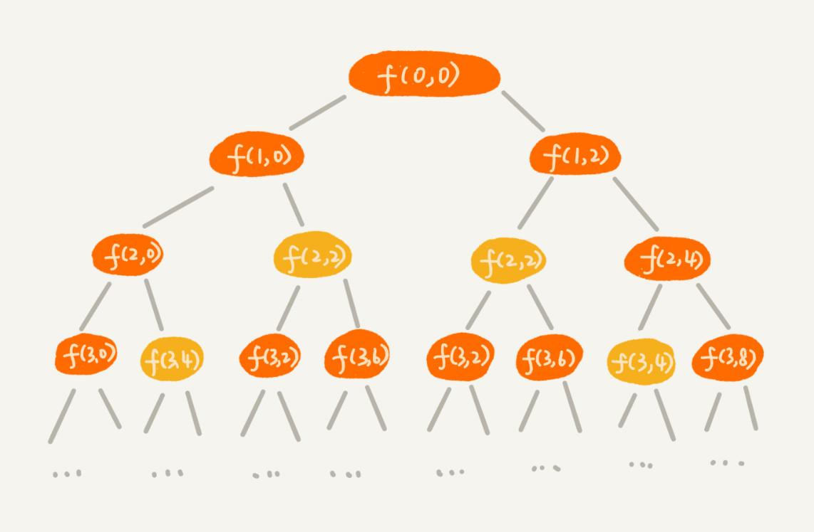
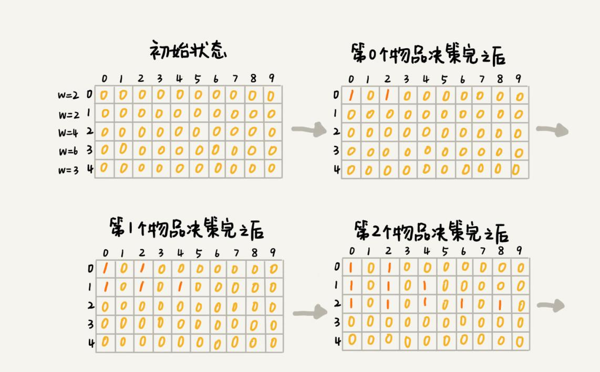
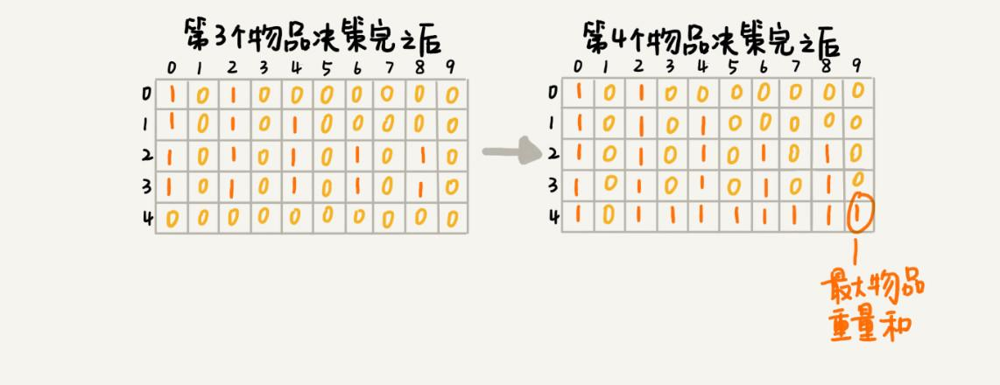
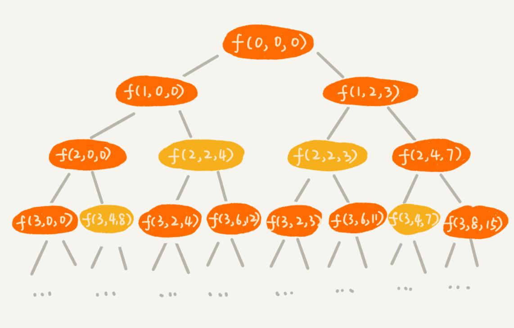
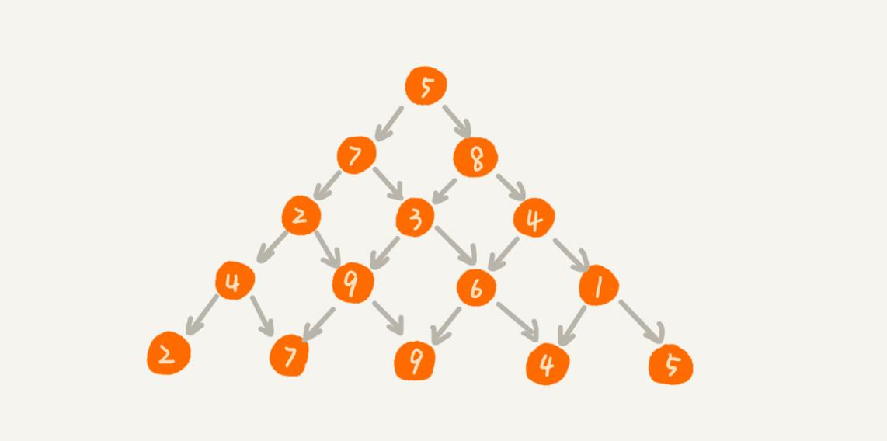

淘宝的“双十一”购物节有各种促销活动，比如“满 200 元减 50 元”。假设你女朋友的购物车中有 n 个（n > 100）想买的商品，她希望从里面选几个，在凑够满减条件的前提下，让选出来的商品价格总和最大程度地接近满减条件（200 元），这样就可以极大限度地“薅羊毛”。作为程序员的你，能不能编个代码来帮她搞定呢？
动态规划学习路线
动态规划比较适合用来求解最优问题，比如求最大值、最小值等等。它可以非常显著地降低时间复杂度，提高代码的执行效率。不过，它也是出了名的难学。它的主要学习难点跟递归类似，那就是，求解问题的过程不太符合人类常规的思维方式。对于新手来说，要想入门确实不容易。不过，等你掌握了之后，你会发现，实际上并没有想象中那么难。
为了让你更容易理解动态规划，分了三篇讲解。这三篇分别是，初识动态规划、动态规划理论、动态规划实战。
第一篇，通过两个非常经典的动态规划问题模型，向你展示为什么需要动态规划，以及动态规划解题方法是如何演化出来的。实际上，只要掌握了这两个例子的解决思路，对于其他很多动态规划问题，都可以套用类似的思路来解决。
第二篇，总结动态规划适合解决的问题的特征，以及动态规划解题思路。除此之外，还会将贪心、分治、回溯、动态规划这四种算法思想放在一起，对比分析它们各自的特点以及适用的场景。
第三篇，应用第二篇讲的动态规划理论知识，实战解决三个非常经典的动态规划问题，加深对理论的理解。弄懂了这三篇中的例子，对于动态规划这个知识点，就算是入门了。
0-1 背包问题
对于一组不同重量、不可分割的物品，需要选择一些装入背包，在满足背包最大重量限制的前提下，背包中物品总重量的最大值是多少呢？
关于这个问题，上一篇讲了回溯的解决方法，也就是穷举搜索所有可能的装法，然后找出满足条件的最大值。不过，回溯算法的复杂度比较高，是指数级别的。那有没有什么规律，可以有效降低时间复杂度呢？一起来看看。
1 | // 回溯算法实现。注意：我把输入的变量都定义成了成员变量。 |
规律是不是不好找？那就举个例子、画个图看看。假设背包的最大承载重量是 9。有 5 个不同的物品，每个物品的重量分别是 2，2，4，6，3。如果把这个例子的回溯求解过程，用递归树画出来，就是下面这个样子：

递归树中的每个节点表示一种状态，用（
i, cw）来表示。其中，i 表示将要决策第几个物品是否装入背包，cw 表示当前背包中物品的总重量。比如，（2，2）表示将要决策第 2 个物品是否装入背包，在决策前，背包中物品的总重量是 2。
从递归树中，你应该能会发现，有些子问题的求解是重复的，比如图中 f(2, 2) 和 f(3, 4) 都被重复计算了两次。可以借助递归那一篇讲的“备忘录”的解决方式，记录已经计算好的 f(i, cw)，当再次计算到重复的 f(i, cw) 的时候，可以直接从备忘录中取出来用，就不用再递归计算了，这样就可以避免冗余计算。
1 | private int maxW = Integer.MIN_VALUE; // 结果放到 maxW 中 |
这种解决方法非常好。实际上，它已经跟动态规划的执行效率基本上没有差别。但是，多一种方法就多一种解决思路，现在来看看动态规划是怎么做的。
把整个求解过程分为 n 个阶段，每个阶段会决策一个物品是否放到背包中。每个物品决策（放入或者不放入背包）完之后，背包中的物品的重量会有多种情况，也就是说，会达到多种不同的状态，对应到递归树中，就是有很多不同的节点。
把每一层重复的状态（节点）合并，只记录不同的状态，然后基于上一层的状态集合，来推导下一层的状态集合。可以通过合并每一层重复的状态，这样就保证每一层不同状态的个数都不会超过 w 个（w 表示背包的承载重量），也就是例子中的 9。于是，就成功避免了每层状态个数的指数级增长。
用一个二维数组 states[n][w+1]，来记录每层可以达到的不同状态。
第 0 个（下标从 0 开始编号）物品的重量是 2，要么装入背包，要么不装入背包，决策完之后，会对应背包的两种状态，背包中物品的总重量是 0 或者 2。用 states[0][0]=true 和 states[0][2]=true 来表示这两种状态。
第 1 个物品的重量也是 2，基于之前的背包状态，在这个物品决策完之后，不同的状态有 3 个，背包中物品总重量分别是 0(0+0)，2(0+2 or 2+0)，4(2+2)。用 states[1][0]=true，states[1][2]=true，states[1][4]=true 来表示这三种状态。
以此类推，直到考察完所有的物品后，整个 states 状态数组就都计算好了。如下图所示。图中 0 表示 false，1 表示 true。只需要在最后一层，找一个值为 true 的最接近 w（这里是 9）的值，就是背包中物品总重量的最大值。


把上面的过程，翻译成代码，如下：
1 | // weight: 物品重量，n: 物品个数，w: 背包可承载重量 |
实际上，这就是一种用动态规划解决问题的思路。把问题分解为多个阶段，每个阶段对应一个决策。记录每一个阶段可达的状态集合（去掉重复的），然后通过当前阶段的状态集合，来推导下一个阶段的状态集合，动态地往前推进。这也是动态规划这个名字的由来，你可以自己体会一下，是不是还挺形象的？
前面讲到，用回溯算法解决这个问题的时间复杂度 $O(2^n)$，是指数级的。那动态规划解决方案的时间复杂度是多少呢？我来分析一下。
这个代码的时间复杂度非常好分析，耗时最多的部分就是代码中的两层 for 循环，所以时间复杂度是 $O(n * w)$。n 表示物品个数，w 表示背包可以承载的总重量。
从理论上讲，指数级的时间复杂度肯定要比 $O(n * w)$ 高很多，但是为了有更加深刻的感受，举一个例子比较一下。
假设有 10000 个物品，重量分布在 1 到 15000 之间，背包可以承载的总重量是 30000。如果用回溯算法解决，用具体的数值表示出时间复杂度，就是 $2^{10000}$，这是一个相当大的一个数字。如果用动态规划解决，用具体的数值表示出时间复杂度，就是 $10000*30000$。虽然看起来也很大，但是和 $2^{10000}$ 比起来，要小太多了。
尽管动态规划的执行效率比较高，但是就刚刚的代码实现来说，需要额外申请一个 n 乘以 w+1 的二维数组，对空间的消耗比较多。所以，有时候会说，动态规划是一种空间换时间的解决思路。你可能要问了，有什么办法可以降低空间消耗吗？
实际上，只需要一个大小为 w+1 的一维数组就可以解决这个问题。动态规划状态转移的过程，都可以基于这个一维数组来操作。具体的代码实现贴在这里，你可以仔细看下。
1 | public static int knapsack2(int[] items, int n, int w) { |
这里特别强调一下代码中的第 8 行，j 需要从大到小来处理。如果按照 j 从小到大处理的话，会出现 for 循环重复计算的问题。你可以自己想一想。
0-1 背包问题升级版
刚刚讲的背包问题，只涉及背包重量和物品重量。现在引入物品价值这一变量。对于一组不同重量、不同价值、不可分割的物品，选择将某些物品装入背包，在满足背包最大重量限制的前提下，背包中可装入物品的总价值最大是多少呢？
这个问题依旧可以用回溯算法来解决。这个问题并不复杂，所以具体的实现思路，就不用文字描述了，直接看代码。
1 | private int maxV = Integer.MIN_VALUE; // 结果放到 maxV 中 |
针对上面的代码，还是画出递归树。在递归树中，每个节点表示一个状态。现在需要 3 个变量（i, cw, cv）来表示一个状态。其中，i 表示即将要决策第 i 个物品是否装入背包，cw 表示当前背包中物品的总重量，cv 表示当前背包中物品的总价值。

在递归树中，有几个节点的
i 和 cw 是完全相同的，比如 f(2,2,4) 和 f(2,2,3)。在背包中物品总重量一样的情况下，f(2,2,4) 这种状态对应的物品总价值更大，可以舍弃 f(2,2,3) 这种状态，只需要沿着 f(2,2,4) 这条决策路线继续往下决策就可以。
也就是说，对于 (i, cw) 相同的不同状态，只需要保留 cv 值最大的那个，继续递归处理，其他状态不予考虑。
思路说完了，但是代码如何实现呢？如果用回溯算法，这个问题就没法再用“备忘录”解决了。所以，就需要换一种思路，看看动态规划是不是更容易解决这个问题？
还是把整个求解过程分为 n 个阶段，每个阶段会决策一个物品是否放到背包中。每个阶段决策完之后，背包中的物品的总重量以及总价值，会有多种情况，也就是会达到多种不同的状态。
用一个二维数组 states[n][w+1]，来记录每层可以达到的不同状态。不过这里数组存储的值不再是 boolean 类型的了，而是当前状态对应的最大总价值。把每一层中 (i, cw) 重复的状态（节点）合并，只记录 cv 值最大的那个状态，然后基于这些状态来推导下一层的状态。
把这个动态规划的过程翻译成代码，就是下面这个样子：
1 | public static int knapsack3(int[] weight, int[] value, int n, int w) { |
关于这个问题的时间、空间复杂度的分析，跟上一个例子大同小异，所以就不赘述了。时间复杂度是 $O(n * w)$，空间复杂度也是 $O(n * w)$。跟上一个例子类似，空间复杂度也是可以优化的，你可以自己写一下。
总结
本篇通过两个例子，展示了动态规划是如何解决问题的，并且一点一点详细讲解了动态规划解决问题的思路。这两个例子都是非常经典的动态规划问题，只要你真正搞懂这两个问题，基本上动态规划已经入门一半了。所以，要多花点时间，真正弄懂这两个问题。
从例子中，应该能发现，大部分动态规划能解决的问题，都可以通过回溯算法来解决，只不过回溯算法解决起来效率比较低，时间复杂度是指数级的。动态规划算法，在执行效率方面，要高很多。尽管执行效率提高了，但是动态规划的空间复杂度也提高了，所以，很多时候会说，动态规划是一种空间换时间的算法思想。
前面也说了，本篇的内容并不涉及理论的知识。这两个例子的分析过程，并没有涉及任何高深的理论方面的东西。而且，个人觉得，贪心、分治、回溯、动态规划，这四个算法思想有关的理论知识，大部分都是“后验性”的，也就是说，在解决问题的过程中，往往是先想到如何用某个算法思想解决问题，然后才用算法理论知识，去验证这个算法思想解决问题的正确性。所以，你大可不必过于急于寻求动态规划的理论知识。
思考
- 如何巧妙解决“双十一”购物时的凑单问题？
对于这个问题，你当然可以利用回溯算法，穷举所有的排列组合，看大于等于
200并且最接近200的组合是哪一个？但是，这样效率太低了点，时间复杂度非常高，是指数级的。当n很大的时候，可能“双十一”已经结束了，你的代码还没有运行出结果，这显然会让你在女朋友心中的形象大大减分。实际上，它跟第一个例子中讲的
0-1背包问题很像，只不过是把“重量”换成了“价格”而已。购物车中有n个商品。针对每个商品都决策是否购买。每次决策之后，对应不同的状态集合。还是用一个二维数组states[n][x]，来记录每次决策之后所有可达的状态。不过，这里的x值是多少呢？
0-1背包问题中，找的是小于等于w的最大值，x就是背包的最大承载重量w+1。对于这个问题来说，要找的是大于等于200（满减条件）的值中最小的，所以就不能设置为200加1了。就这个实际的问题而言，如果要购买的物品的总价格超过200太多，比如1000，那这个羊毛“薅”得就没有太大意义了。所以，可以限定x值为1001。不过，这个问题不仅要求大于等于
200的总价格中的最小的，还要找出这个最小总价格对应都要购买哪些商品。实际上，可以利用states数组，倒推出这个被选择的商品序列。这里先把代码写出来，待会再照着代码给你解释。
1 | // items 商品价格，n 商品个数, w 表示满减条件，比如 200 |
代码的前半部分跟
0-1背包问题没有什么不同，着重看后半部分，看它是如何打印出选择购买哪些商品的。状态
(i, j)只有可能从(i-1, j)或者(i-1, j-value[i])两个状态推导过来。所以，就检查这两个状态是否是可达的，也就是states[i-1][j]或者states[i-1][j-value[i]]是否是true。如果
states[i-1][j]可达，就说明没有选择购买第i个商品，如果states[i-1][j-value[i]]可达，那就说明选择了购买第i个商品。从中选择一个可达的状态（如果两个都可达，就随意选择一个），然后，继续迭代地考察其他商品是否有选择购买。
- “杨辉三角”不知道你听说过吗？现在对它进行一些改造。每个位置的数字可以随意填写，经过某个数字只能到达下面一层相邻的两个数字。假设你站在第一层，往下移动，把移动到最底层所经过的所有数字之和，定义为路径的长度。请你编程求出从最高层移动到最底层的最短路径长度。欢迎留言和我分享。



评论加载中